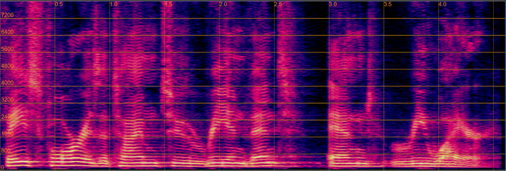

The following table presents, for each evaluation sentence, four separated utterances generated by the Separation only, Sep before Derev, Separation only(joint), and Sep before Derev(joint), respectively.
| Demo | 1 | 2 | 3 |
| Mixtur | |||
| (Audio) | |||
| Target |  | ||
| (Audio) | |||
| Separation only | |||
| (Audio) | |||
| Sep before Derev | |||
| (Audio) | |||
| Separation only(joint) | |||
| (Audio) | |||
| Sep before Derev(joint) | |||
| (Audio) |